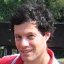

|  |
Shai Halevi Principal Research Staff Member IBM T. J. Watson Research Center |
|
Home My publications Presentations Contact me |
Hi, my name is Shai Halevi and this is my homepage. Since 1997 I am a
Research Staff Member in the
Cryptography Research Group in
IBM T.J. Watson Research Center. I received my PhD in Computer Science from
the Laboratory for Computer Science
in MIT. I received my B.Sc. and M.Sc. in
Computer Science from the Technion
in Israel. My research area is cryptography, and in particular cryptographic protocols and the building blocks from which they are constructed. See my publication list for a better idea of the things that interest me, or see my CV for a full listing. Some other things that I am doing are described below:
Other activities: In 2009-2012 I was an associate editor in TISSES (ACM Transactions on Information and System Security). I chaired Crypto 2009 and co-chaired TCC 2006 (with Tal Rabin) and ACM-CCS 2016 (with Christopher Kruegel and Andrew Myers). I also served on the program committees of Eurocrypt 2019, ACNS 2018, ACM-CCS 2017, Eurocrypt 2016, TCC 2015, CRYPTO 2013, PKC 2013, Pairing 2012, TCC 2011, Pairing 2010, Asiacrypt 2009, Eurocrypt 2008, ISC 2008, Asiacrypt 2007, ISC 2007, Eurocrypt 2007, CT-RSA 2007, VietCrypt 2006, Crypto 2005, Eurocrypt 2005, ACNS 2003, PKC 2002, CT-RSA 2002, Eurocrypt 2001, and Crypto 2000. Awards: I am an IACR fellow, and the recipient of the 2017 SIGSAC Outstanding Innovation Award. I also received the IBM Memorial Pat Goldberg best-paper awards in 2004, 2012 and 2013, and the best-paper award in Eurocrypt 2013. |